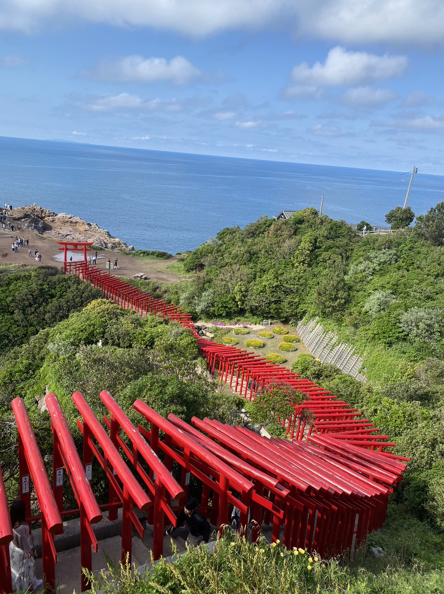
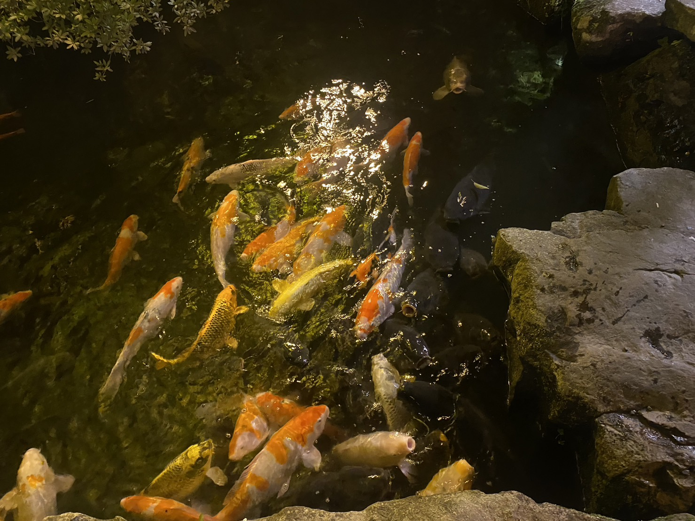

おいでませ、やまぐち
山口県は何もないと住んでる人達が言っているのをよく聞きます。 ですが、来年上京するのでせっかくなら地元を観光してみるかと思い２０２３年のの５月に４日間かけて観光してみました‼


元乃隅神社の画像です。
鳥居がいっぱいありました。
意外と楽しめたので最終課題を制作するならせっかくならと思いこの場をもってご紹介したいと思います！ 右上の欄から各自飛べますのでよろしければクリックしてみてください！